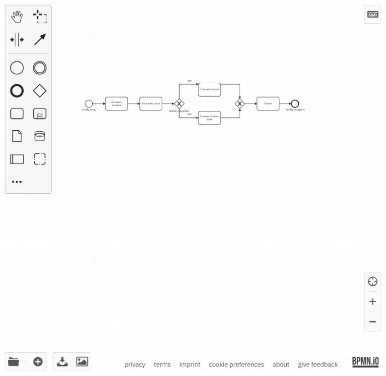

BPA · nap02 · 01 · Mentett, ellenőrzött eredmények (2026-10-05)
Kávézó

Kávézó – XOR-folyamat, lépésről lépésre
- Nyisd meg a https://demo.bpmn.io/ szerkesztőt. Új rajzhoz válaszd a create lehetőséget.
- A kezdő esemény neve: Vendég rendel. Fűzd hozzá: Rendelés felvétele → Kávé elkészítése.
- A kávé elkészítése után helyezz el XOR-kaput: Helyben fogyasztja?
- Az igen ág: Csészébe kiöntés. A nem ág: Elviteles pohárba töltés. Mindkét nyíl kapjon címkét.
- Vezesd össze a két ágat egy második XOR-kapuval. Ez nem vár mindkét ágra: az adott rendeléshez kiválasztott ág után folytatja a folyamatot.
- Fűzd hozzá: Fizetés → Vendég kiszolgálva (záró esemény). Mentsd kave_xor.bpmn néven.
Elkészült fájl és ellenőrzés
- Kimenet: kave_xor.bpmn.
- A mellékelt oktatói referenciamodell szerkeszthető másolatából készült; az eredeti változatlan maradt. A modellben a bejövő és kimenő kapcsolat-hivatkozások is szerepelnek.
- Egy kezdő esemény, öt tevékenység, két XOR-kapu, egy záró esemény, kilenc sorrendáramlás.
- Igen út: Vendég rendel → Rendelés felvétele → Kávé elkészítése → Helyben fogyasztja? → Csészébe kiöntés → XOR-összevezetés → Fizetés → Vendég kiszolgálva.
- Nem út: ugyanez, a Csészébe kiöntés helyett Elviteles pohárba töltés.
- A munkapéldány megnyitása sikerült a bpmn.io-ban. A böngészős letöltés időtúllépéssel végződött; a végleges fájl helyben mentve.
- Ez az 1. blokk modellezési eredménye. A szimuláció a 4. blokkban következik.